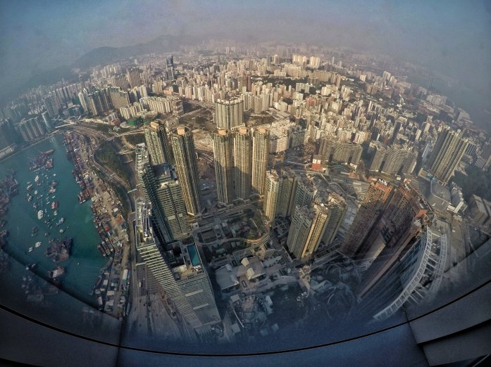
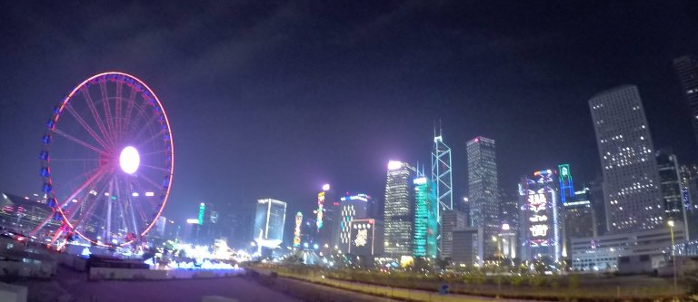
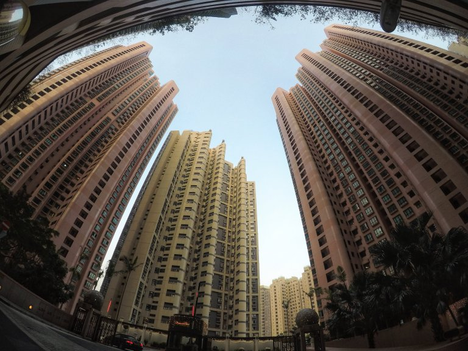
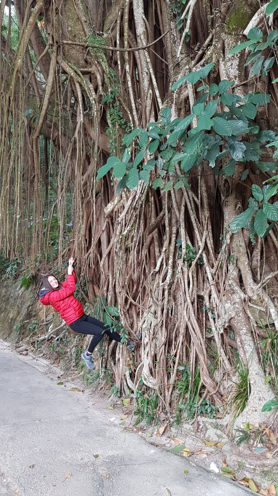
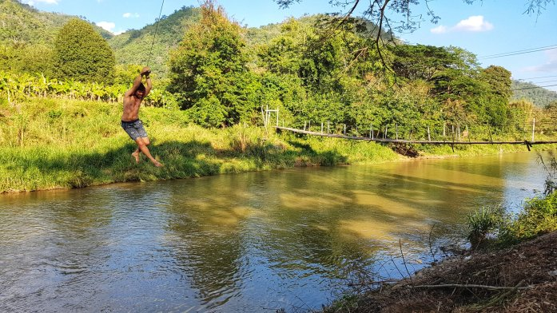
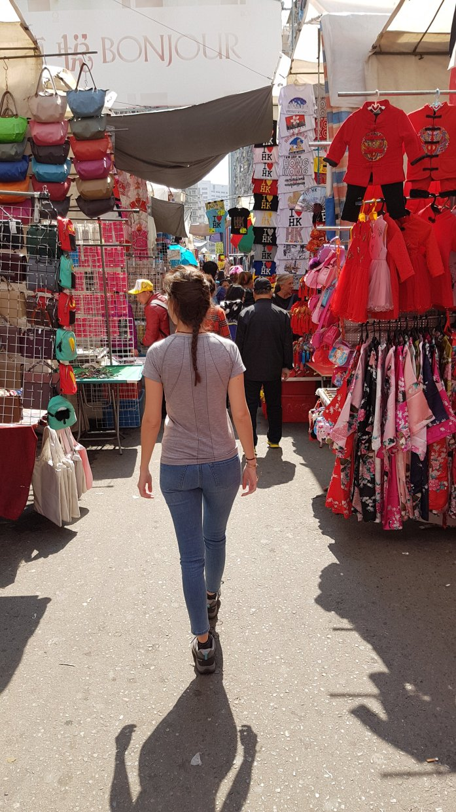
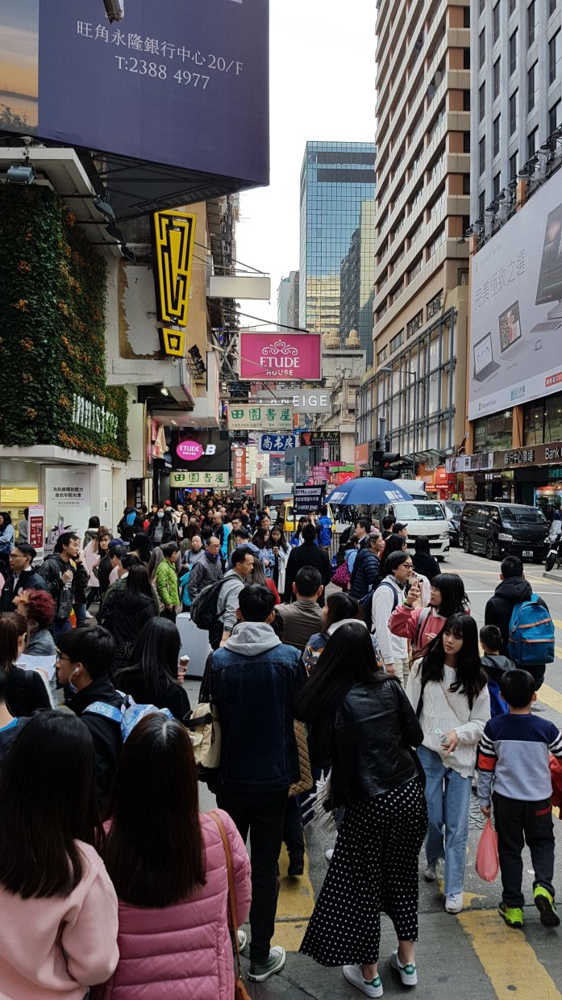
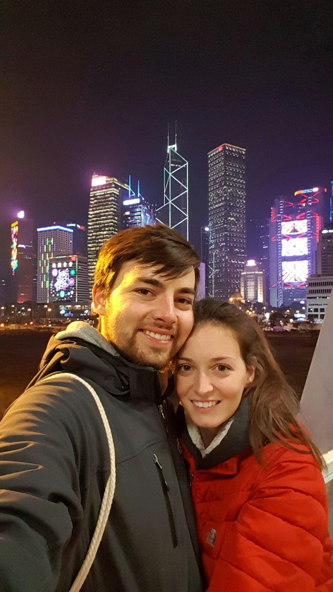

Terribile viaggio da Macao a HK in speedboat! Ho rischiato di vomitare, così come molti altri sulla barca (i conati di vomito degli altri non mi aiutavano infatti..). Meglio andare con una barchetta a 10km/h anche se ci si mette più tempo!! Amen.
Ciononostante, eravamo curiosissimi di vedere HK. Dopo aver visitato tanti piccoli paesini sperduti avevamo voglia di stare qualche giorno in una grande città, con tutto quello che ha da offrire.
La nostra permanenza si è arricchita della piacevole compagnia dei nostri amici Sergio & Cristina, insieme ai genitori e al fratello di Sergio che per una fortunata coincidenza sono venuti a trovarlo negli stessi giorni. Proprio un bel gruppetto!! Ci siamo divertiti molto! Abbiamo visitato la città insieme alle nostre guide turistiche private 😏 (vivendo a HK da alcuni mesi, hanno saputo portarci nelle zone “worth visiting”) e non ci hanno fatto mancare proprio nulla.
  Victoria Peak – stendiamo un velo pietoso sul quasi dislocamento della spalla durante questa performance.. 😁
Non c’entra con HK ma la foto precedente mi ha ricordato un momento trascorso in Thailandia in cui Carlo si era trasformato in Tarzan:
In breve
HK ci è piaciuta, anche se l’abbiamo trovata un po’ “opprimente”: panorama prettamente costellato da grattacieli e cielo sempre grigio causa smog, strade molto strette da cui non passa neanche uno spiraglio di luce e tanta gente, forse troppa per i nostri gusti (infatti è una delle città più densamente popolose al mondo con i suoi 7M di abitanti!).
La mancanza di spazio e il crescente numero di abitanti e di infrastrutture, hanno portato la città ad avere una intensa densità di costruzioni, rendendola la città più verticale al mondo.
La città
È sicuramente una città affascinante, soprattutto il porto e l’area di Central. Considerata la “mecca della finanza e dello shopping” (le nostre gambe se ne sono accorte dopo ore di camminata senza trovare un solo bar/ristorante poiché eravamo nella vasta zona in cui vi erano solamente negozi di marca), gode di altissime posizioni in numerose classifiche internazionali: redditi pro capite tra i più alti al mondo, alta qualità di vita ed indice sviluppo umano, aspettativa di vita tra le più lunghe, eccellente qualità di vita, etc. Sebbene il 95% della popolazione sia di etnia cinese e HK si trovi su territorio cinese, non fa parte della Cina!!! O perlomeno, ancora per poco..
Londra e Pechino firmano la Dichiarazione Congiunta: Hong Kong doveva passare alla Cina dalla mezzanotte del primo luglio del 1997. Secondo il principio “Un Paese, Due Sistemi”, sarebbe diventata una Regione Amministrativa Speciale (SAR), mantenendo l’autonomia del proprio sistema economico, monetario e politico per i successivi cinquant’anni.
Usanze particolari
Camminando per strada abbiamo notato alcune persone che si tiravano sberlette sulle braccia e sulle spalle: 1 2… 3 persone,… “ma qui sono tutti un po’ pazzi?“, abbiamo pensato. Invece abbiamo poi scoperto che è un modo per far fluire il chakra, ovvero l’energia presente in ogni essere vivente.
Nei bar/ristoranti se chiedi una bottiglia di acqua fredda ti portano un bicchiere di acqua calda. Non ne abbiamo appurato il motivo, ma pensiamo sia perché con il caldo l’acqua calda fa meglio (il corpo la assimila più velocemente) e/o perché l’acqua bollente contiene meno batteri….. sì però se voglio un bicchiere d’acqua fredda me la dai fredda eh 😅
Girando per la città di domenica ci siamo accorti della presenza di un gran numero di persone che sembravano dei senzatetto. Sergio ci ha poi spiegato che in realtà sono Filippini, che si ritrovano nel loro unico giorno libero per trascorrere del tempo insieme ai propri connazionali. Giorno libero perché a quanto pare moltissime famiglie di HK impiegano filippini quali domestici, facendoli dormire e vivere nella propria residenza. Essendo le Filippine uno stato molto povero, molti cittadini si trasferiscono volontariamente nella vicina HK per reperire lavoro e dare sostentamento ai propri cari.
Cosa abbiamo fatto a HK?
Siamo saliti sul Victoria peak (esplorando la vetta per trovare i punti dai quali si ha una vista migliore della città), abbiamo visto lo Skyline di HK dall’International Commerce Centre (decimo palazzo più alto al mondo con tanto di 108 piani), ci siamo recati in uno zoo (alcune specie di animali non le avevamo mai viste), abbiamo passeggiato per la famosa Soho (stradine piene di ristoranti carini), visitato il grande mercato nella zona di Mongkok (quanta gente!) e abbiamo assistito al giornaliero spettacolo di luci notturne.
Un grazie di cuore a Sergio, Cristina & Co. per le belle giornate trascorse insieme!
  
Comment Section